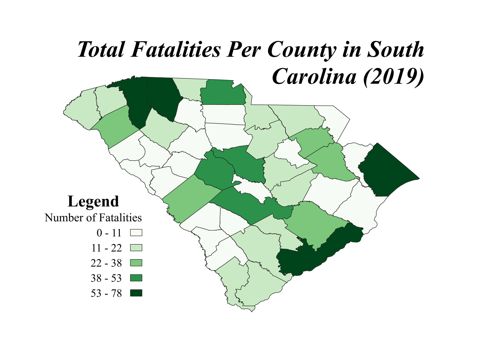

Homework 7: South Carolina Choropleth
The choropleth below shows the number of fatalities per county in South Carolina in the year 2019. The data sources are below.

Data used for this project
CSV dataset from United States Department of Transportation
Data source:
US Department of Transportation
Vector geoJSON